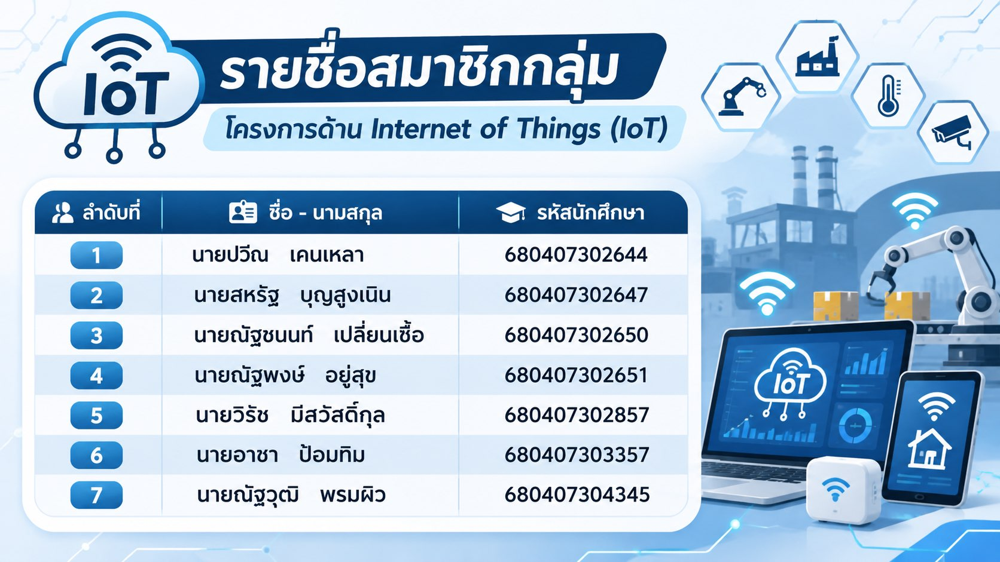
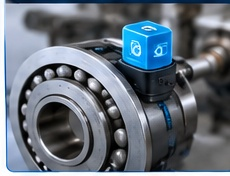

เดินตรวจด้วยคน
ใช้เวลา และอาจพลาดสัญญาณระหว่างรอบตรวจ

TECHNOLOGY FOR INDUSTRY
Internet of Things
เชื่อมเครื่องจักรกับข้อมูล
เปลี่ยนสัญญาณให้เป็นการดูแลที่ดีขึ้น
เก็บข้อมูล → วิเคราะห์ → ลงมือทำ
การตรวจแบบเดิมมักพบปัญหาเมื่อเครื่องเริ่มเสียหรือหยุดแล้ว
ใช้เวลา และอาจพลาดสัญญาณระหว่างรอบตรวจ
ข้อมูลกระจัดกระจาย เปรียบเทียบย้อนหลังยาก
ซ่อมฉุกเฉินและหยุดการผลิตโดยไม่คาดคิด
ตัวอย่าง: อุณหภูมิสูงผิดปกติ
ทีมซ่อมบำรุงเข้าตรวจได้ทันเวลา
อุปกรณ์เก็บและส่งข้อมูล เพื่อให้คนหรือระบบใช้ตัดสินใจได้
วัดสิ่งที่เกิดขึ้น
เชื่อมข้อมูลผ่านเครือข่าย
มองเห็นแนวโน้ม
ตอบสนองตามเงื่อนไข
ทำงานต่อเนื่องได้ โดยไม่ต้องมีคนเฝ้าดูทุกจุดตลอดเวลา
อุปกรณ์เชื่อมต่อ ส่งสถานะ และตอบสนองต่อข้อมูลได้
ควบคุมไฟและแอร์
ติดตามชีพจรและก้าวเดิน
GPS และแจ้งเตือนบำรุงรักษา
ติดตามตำแหน่งระหว่างทาง
หลักการเดียวกัน: อุปกรณ์ + การเชื่อมต่อ + ข้อมูลที่นำไปใช้ได้
ภาพรวม 5 ขั้นตอนของระบบ IoT
เก็บค่าจากหน้างาน
ส่งข้อมูล
จัดเก็บและประมวลผล
แสดงสถานะ
ตัดสินใจหรือสั่งงาน
จากข้อมูล → สู่การใช้งานจริง
เริ่มที่การวัดค่า แล้วส่งไปยังระบบที่แสดงผลและช่วยให้ลงมือทำ
วัดอุณหภูมิ
ความชื้น
แรงสั่นสะเทือน
Wi-Fi · Ethernet
Bluetooth · 4G/5G
รับข้อมูล
จัดเก็บและประมวลผล
Dashboard
มือถือ · เว็บ
เลือกเทคโนโลยีให้เหมาะกับระยะทาง ปริมาณข้อมูล และสภาพหน้างาน
ติดตามสัญญาณสำคัญและตอบสนองได้ก่อนปัญหาลุกลาม
ตรวจวัดต่อเนื่อง
ลดเวลาหยุดเครื่อง · ลดการตรวจมือ · วางแผนซ่อมได้ดีขึ้น
ตัวอย่างการติดตามสภาพอุปกรณ์ในงานซ่อมบำรุง

ติดตามสัญญาณ 2 แบบ
สังเกตการเปลี่ยนแปลงที่บอกแนวโน้มความผิดปกติ
ช่วยสังเกตความร้อนที่ผิดจากสภาวะปกติ
แจ้งเตือนให้ทีมตรวจ ก่อนเกิด Downtime
ต้นฉบับยกตัวอย่างการเตือนล่วงหน้า 1–2 สัปดาห์เลือกจังหวะซ่อมจากสภาพเครื่องจักร แทนการรอให้เสียหรือเปลี่ยนตามปฏิทิน
หยุดผลิต
ซ่อมฉุกเฉิน
ค่าใช้จ่ายสูง
วางแผนได้
แต่อาจเปลี่ยนอะไหล่
เร็วเกินจำเป็น
ใช้ข้อมูล IoT
จับแนวโน้มผิดปกติ
ลด Downtime
เป้าหมาย: ซ่อมเมื่อมีหลักฐานว่าควรซ่อม
เห็นข้อมูลสำคัญแบบ Real-time ผ่านคอมพิวเตอร์หรือมือถือ
ข้อมูลอยู่ที่เดียว · เห็นแนวโน้ม · รู้ว่าจุดไหนต้องดูแล
คุณค่าของข้อมูลเกิดเมื่อทีมใช้เพื่อตัดสินใจและลงมือทำ
เพิ่มประสิทธิภาพ
ควบคุมได้ดีขึ้น
ลดการใช้เกินจำเป็น
รู้เหตุผิดปกติเร็วขึ้น
อ้างอิงข้อมูลจริง
เริ่มจากปัญหาธุรกิจที่อยากแก้ แล้วเลือกข้อมูลที่ช่วยตอบคำถามนั้น
อุปกรณ์ที่เชื่อมต่อเพิ่มจุดที่ต้องดูแลด้านความปลอดภัยและการปฏิบัติงาน
ดูแลระบบให้ต่อเนื่อง ไม่ใช่ติดตั้งแล้วจบ
แต่ละส่วนมีบทบาทต่างกัน และทำงานต่อกันเป็นระบบ
เก็บข้อมูล
วิเคราะห์ข้อมูล
สั่งงานตามเงื่อนไข
มองเห็นได้ · วิเคราะห์ได้ · ตอบสนองได้
กรณีศึกษาในโรงงานผลิตตามตัวอย่างในต้นฉบับ
เปลี่ยนจากการหาปัญหาทีหลัง เป็นการเห็นสัญญาณและตอบสนองได้เร็วขึ้น
อุปกรณ์ส่งข้อมูลจากหน้างาน
Dashboard ช่วยติดตามสถานะ
ทีมดูแลก่อนปัญหาบานปลาย
เริ่มจากหนึ่งปัญหาในโรงงาน แล้ววัดผลให้ชัด
ใช้ปุ่มลูกศร ← → เลื่อนสไลด์ · กด Esc เพื่อออกจากโหมดแก้ข้อความ